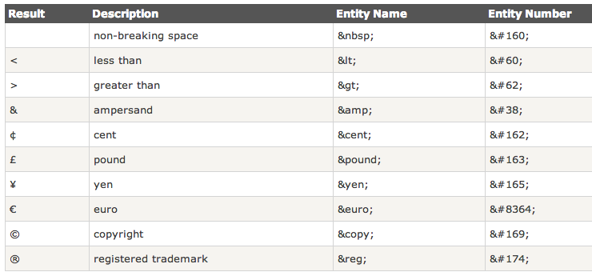

HTML entity문자(키보드문자), 심볼문자
1. entity문자, 심볼문자
html에서 엔티니 문자(키보드 문자, html 문자)나 심볼문자를 나타내는 방법으 다음과 같다.
- &entity_name;
- OR
- &#entity_number;
2. 스페이스 키
웹페이지에서 스페이스키를 공백은 한칸밖에 인식하지 않는다. 만약 여러칸의 공백을 입력하기 위해서는 " "엔티티 문자로 공백을 나타내야 한다.
3. html 문자
"<",">문자를 웹페이지에 표혀하기 위해서는 < , >를 사용하여야 한다. 키보드의 <,>로 표현하면 태그로 인식한다.

- <p>I will display .<p>
- <p>I will display <<p>
- <p>I will display ><p>
4. 심볼문자(링크를 참조)
- 수학기호 심볼 문자 : http://www.w3schools.com/charsets/ref_utf_math.asp
- 그리스기호 심볼 문자 : http://www.w3schools.com/charsets/ref_utf_greek.asp
- 통화기호 심볼 문자 : http://www.w3schools.com/charsets/ref_utf_currency.asp
- 화살표 심볼 문자 : http://www.w3schools.com/charsets/ref_utf_arrows.asp
- 기타(별, 하트,..) 심볼 문자 : http://www.w3schools.com/charsets/ref_utf_symbols.asp